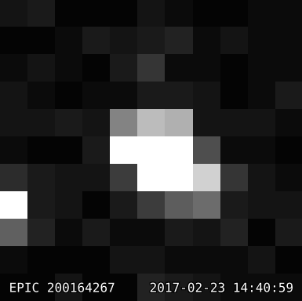

The raw, uncalibrated data files for K2 Campaign 12 are now available for download from the data archive at MAST.
The raw files are made public straight away to aid astronomers in preparing proposals due this month to use ground-based telescopes to further investigate TRAPPIST-1. These are not the project's true data products: by late May, the routine pipeline processing of the K2 data will be completed and vetted, and the fully calibrated data made available.
We encourage our community to share their understanding of the raw data with the public by blogging or tweeting tutorials and analyses. This public TRAPPIST-1 data set offers a unique opportunity to let a wider audience witness the process scientific discovery.
The remainder of this blog post summarizes the caveats associated with the raw data, describes the availability of preliminary Target Pixel Files, and offers a quick-look at the TRAPPIST-1 light curve.
Raw data caveats
The use of the raw, uncalibrated data files requires an intimate understanding of their format and caveats. In particular:
- the raw data are not flat-fielded, bias-subtracted, or smear-corrected;
- cadences of poor quality, e.g. due to thruster firings, are not flagged;
- the data are formatted in a non-standard way and require reformatting.
Moreover, during Campaign 12, a cosmic ray event reset the spacecraft's onboard software causing a five-day break in science data collection from Feb 1st through Feb 6th. The benign event is the fourth occurrence of a cosmic ray susceptibility since launch in March 2009 and the spacecraft remains healthy and operating nominally otherwise.
Pseudo Target Pixel Files
TRAPPIST-1 was observed using a 11x11 short-cadence mask with EPIC ID 200164267 from Dec 15th, 2016, through Mar 4th, 2017. To help the community explore this target, the Guest Observer Office reformatted the raw data into a pseudo Target Pixel Files using the Kadenza tool.
The files are available for download from Zenodo (DOI 10.5281/zenodo.375796):
- Long cadence: k2-trappist1-unofficial-tpf-long-cadence.fits.gz (2 MB)
- Short cadence: k2-trappist1-unofficial-tpf-short-cadence.fits.gz (45 MB)
Compared to traditional Target Pixel Files, the FLUX values in these files are not corrected for smear or bias, and not all header keywords are populated.
Quick look at TRAPPIST-1
A quick-look lightcurve of the long cadence data for TRAPPIST-1 reveals sinusoidal patterns due to star spots, and at least 6 planets:
The pseudo Target Pixel Files above can also be converted into movies using the k2flix tool, which shows TRAPPIST-1 to be at the center of the target mask:
